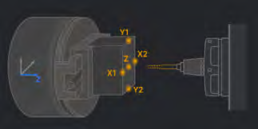
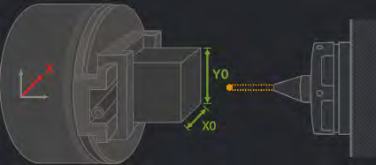

Страница Machining (Обработка) объединяет все функции, необходимые для обработки деталей: классический вид, графический вид, пошаговый мастер, режимы обработки AUTO, JOG и MDI, а также подфункции каждого режима. Это покрывает все сценарии обработки, с которыми сталкивается оператор. Первое действие после включения станка — выход в ноль (подфункция режима JOG). В режиме MDI можно самостоятельно набрать код программы для проверки или обработки. Ручной (JOG) и автоматический (AUTO) режимы имеют подрежимы — оператор выбирает подходящий в зависимости от задачи.
Классический вид показывает панель координат, окно TFS и панель программы обработки.
Графический вид служит экраном наблюдения при выполнении программы в режиме AUTO. На нём отображаются:
Мастер проводит пользователя через последовательность шагов и помогает новичку быстро освоить основные операции и приёмы работы со станком. Следуя подсказкам на экране, можно научиться и сразу обработать деталь. На рисунке ниже показаны шаги мастера — выполняйте обработку по подсказкам.
Автоматический режим (AUTO) предназначен для быстрой и точной обработки детали по готовой управляющей программе. Система сама считывает и интерпретирует заранее подготовленный код и выполняет весь цикл обработки без участия оператора.
В режиме AUTO эта функция служит для управления кодом программы и его редактирования: со страницы «Обработка» выполняется переход на страницу Program (Программа) для правки выбранного файла обработки.
Эти три подфункции показывают все G-коды, которые поддерживает станок, а также G- и M-коды, сгруппированные по модальным группам.
Сейчас здесь доступна функция защитной двери.
Доступны две системы координат: станка (G53) и детали (G54). Оператор выбирает, какую из них отображать.
Учёт пройденного пути по пяти осям. Показания любой оси можно обнулить прямо во время движения — это упрощает расчёты и помогает точнее отслеживать перемещения каждой оси при поиске неисправностей, повышении точности и т. п.
Коррекция частоты вращения шпинделя (S) и подачи (F): для шпинделя — от 50 до 120 %, для подачи — от 0 до 120 %. Оператор может менять коррекцию вручную прямо во время обработки.
Показывает имя программы, расчётное время обработки, число строк кода, прошедшее время и оценку оставшегося времени.
Условная остановка программы (M01): если на панели включена функция M01, станок приостанавливается, встретив в программе код M01.
Ручной режим предназначен для операций, требующих точного ручного управления и настройки: точной привязки заготовки, измерения инструмента и т. п. Ручное управление позволяет не только аккуратно выполнять тонкую работу, но и быстро реагировать в нештатных ситуациях, избегая столкновения инструмента с деталью. В режиме JOG доступны три подрежима: Handwheel (маховик), Rapid (ускоренный) и Increment (шаговый).
TSM — сокращение от «инструмент, шпиндель, M-функции шпинделя» (Tool, Spindle, M). Этот экран содержит основные функции режима JOG.
Выбор инструмента для обработки. Отображаются данные инструмента, коррекция на длину, тип инструмента и наличие инструмента в текущей ячейке магазина.
Поддерживаются смещения нуля G54, G55, G56, G57, G58, G59.
Величина шага в режиме Increment (шаговое перемещение): ×1, ×10, ×100, ×1000 (мкм).
Доступны три способа привязки заготовки: по одной оси, прямоугольной заготовки и цилиндрической заготовки. Привязка по одной оси выполняется только инструментом; для прямоугольной и цилиндрической заготовок есть две подфункции — привязка инструментом и привязка щупом.
Позволяет привязаться отдельно по оси X, Y или Z; по каждой оси привязка выполняется инструментом.
Для обеих функций доступна привязка как инструментом, так и щупом.

Подфункция привязки заготовки: после выбора смещения нуля записываются соответствующие координаты; когда смещение нуля задано, можно продолжать обработку. На экранах привязки по одной оси, прямоугольной и цилиндрической заготовки есть схема точек касания.
| Способ привязки | X1 | X2 | Y1 | Y2 | Z | P1 | P2 | P3 |
|---|---|---|---|---|---|---|---|---|
| Ось X | √ | √ | ||||||
| Ось Y | √ | √ | ||||||
| Ось Z | √ | |||||||
| Прямоугольная заготовка | √ | √ | √ | √ | √ | |||
| Цилиндрическая заготовка | √ | √ | √ | √ |

Ещё одна подфункция привязки заготовки. Сначала нужно подготовиться: установить щуп в разделе Tools → Tool List (Инструменты → Список инструментов), затем откалибровать его в разделе Machining → Tool Measure (Обработка → Измерение инструмента). После этого доступна привязка щупом: выберите нужное смещение нуля, введите длину и ширину (или диаметр) заготовки, подведите щуп к точке обучения и запустите привязку.
Функция включает привязку инструмента и калибровку щупа и помогает точнее получать данные для обработки.
Щуп автоматически измеряет координаты, нужные для привязки заготовки. Когда в шпинделе зажат щуп, на экране появляется поле Ruby Radius (радиус рубинового шарика) — укажите в нём радиус шарика вашего щупа.
Инструмент касается датчика, и система измеряет его длину для последующей обработки.
В режиме MDI оператор управляет станком, вручную вводя команды, фрагменты программ и параметры с экранной буквенной клавиатуры.
В режиме MDI оператор вводит код программы или команды вручную с клавиатуры пульта ЧПУ. Выше показан экран ввода кода MDI с функцией очистки.
Вспомогательные функции MDI: пауза по M01 и пробный прогон маховиком — выполнение кода управляется маховиком.
Страница управления инструментом. Магазин вмещает 6 инструментов; в окне магазина отображаются данные всех инструментов в магазине и наличие инструмента в каждой ячейке, что упрощает управление инструментом. Здесь же управляются данные щупа.
На странице подробных данных можно просматривать и редактировать параметры каждого инструмента. Доступны для редактирования:
коррекция на длину, коррекция на радиус, диаметр режущей части, длина режущей части, длина инструмента, диаметр хвостовика, число зубьев, радиус скругления.
Нужный для обработки инструмент устанавливается с помощью смены инструмента в списке инструментов. На этой странице хранятся данные инструментов и показано, есть ли инструмент под текущим номером.
Страница Program (Программа) служит для управления кодом программ обработки.
Раздел локальных файлов содержит операции с файлами программ:
Предпросмотр траектории позволяет перед обработкой детали быстро смоделировать траекторию движения инструмента.
Сдвиг изображения траектории для просмотра под нужным углом.
Поворот изображения траектории для удобного просмотра.
Покадровое выполнение кода в предпросмотре для просмотра обработки.
Изменение скорости воспроизведения.
Настольный 5-осевой обрабатывающий центр XMACHINE поддерживает внешние USB-накопители и SD-карты. С их помощью готовые файлы программ можно скопировать на станок или сразу загрузить для обработки. Подфункции USB-накопителя и SD-карты такие же, как у локальных файлов.
Страница System (Система) содержит базовые функции управления станком: администрирование, мониторинг, обновление.
Аварийные сообщения об ошибках при работе — ошибках в коде или действиях оператора. Журнал аварий можно экспортировать: это позволяет проанализировать ошибки, допущенные при работе, и сохранить их.
Параметры конфигурации станка: имя параметра, значение (единица), способ вступления в силу. Параметры заданы на заводе; некоторые из них можно изменить под свои задачи. Есть функция сброса: если оператор ошибочно изменил параметр, можно вернуть исходные значения станка.
Экспорт журнала на USB-накопитель — в нём можно просмотреть действия оператора в интерфейсе.
Удаляет все пользовательские данные: локальные NC-файлы, аварийные сообщения, журналы и другие основные сведения.
Сбрасывает параметры станка, заданные оператором, и возвращает исходные заводские значения.
Позволяет оператору просматривать состояние отдельных функций и контролировать их.
Аналоговые IO контролируют температуру шпинделя и процессора:
| Сигнал | Тип сигнала | Значение | Единица |
|---|---|---|---|
| Температура шпинделя | AI | / | °C |
| Температура процессора | AI | / | °C |
Цифровые IO позволяют в реальном времени отслеживать и управлять сигналами различных функций станка.
| Сигнал | Тип сигнала | Примечание |
|---|---|---|
| Магазин | DI | Магазин задвинут / выдвинут |
| Шпиндель | DI | Инструмент зажат / разжат |
| Ячейки инструмента | DI | Состояние 7 ячеек |
| Ось X | DI | Концевики «+» и «−» |
| Ось Y | DI | Концевики «+» и «−» |
| Ось Z | DI | Концевики «+» и «−» |
| Ось A | DI | Концевики «+» и «−» |
| Защитная дверь | DI | Дверь открыта / закрыта |
| Аварийная остановка | DI | Нажата ли кнопка аварийной остановки |
| Обдув шпинделя | DO | Охлаждение шпинделя |
| Освещение | DO | |
| Щуп | DI | Принят ли сигнал щупа |
Состояния приводов: INIT (инициализация), PREOP, SAFEOP, OP, BOOT. Функция обнуления привода принимает текущее положение оси C за нулевую координату — это помогает оператору настроить положение оси C при обработке. Функция обработки сбоев сбрасывает случайные ошибки привода, после чего оператор может продолжать работу в обычном порядке.
Состояние приводов в норме:
| Привод | Модель | Тип | Состояние | Код ошибки |
|---|---|---|---|---|
| Привод оси X | XSD100 | relative | OP | 0 |
| Привод оси Y | XSD100 | relative | OP | 0 |
| Привод оси Z | XSD100 | relative | OP | 0 |
| Привод оси A | XSD100 | relative | OP | 0 |
| Привод оси C | XSD100 | absolute | OP | 0 |
| Привод оси U | XST100 | relative | OP | 0 |
| Привод оси V | XST100 | relative | OP | 0 |
| Привод шпинделя | XSA100 | relative | OP | 0 |
Если в строке аварийных сообщений появилось сообщение с префиксом AL1/
Экран щупа: после успешного подключения статус щупа меняется на «подключён» и отображаются параметры сопряжённого щупа. Отклоните наконечник щупа — по индикатору можно проверить сигнал щупа.
Экран после успешного подключения щупа: показаны заряд батареи и параметры щупа.
Осциллограф в реальном времени показывает траектории движения осей 5-осевого станка во время обработки. Эти сигналы позволяют записывать состояние станка и своевременно выявлять возможные проблемы, а сравнение формы сигналов в разных режимах — оценивать точность, стабильность и другие характеристики станка.
1. Настройка выборки. Можно выбрать до 4 сигналов из 7 осей: X, Y, Z, A, C, U, V.
2. Запуск мониторинга.
3. Курсоры A/B, сдвиг курсора влево и вправо. С помощью курсоров A/B оператор наглядно сравнивает амплитуду, частоту и другие параметры двух сигналов и вовремя замечает проблемы.
4. Вид — наглядное отображение изменения сигнала:
Измерение фактического направления осей вращения A и C позволяет построить точную кинематическую модель станка и повысить точность обработки. Со временем направление осей отклоняется от исходного, поэтому параметры нужно периодически калибровать заново, чтобы определить отклонения.
Обновление версии ПО станка. Во время обновления станок должен находиться в состоянии аварийной остановки.
Выполняется проверка файла обновления; после обновления в онлайн-обновлении появляются приёмник и передатчик щупа и отображается операция их сопряжения. После успешного сопряжения выполните обновление по подсказкам. Если сопряжение не удалось, найдите и устраните причину.
Заранее запишите на свой USB-накопитель пакет обновления нужной версии и обновите станок по подсказкам.
Станок поддерживает подключение к сети Wi-Fi.
Сначала щуп нужно подключить к станку — после успешного подключения становятся доступны функции щупа; иначе станок выдаст сообщение «Щуп не установлен!». Порядок подключения щупа показан ниже.